Layout (K2)
Ids, nesting and the split side column are K2's. Sizes changed from K2's first numbers (K2 leaves them to this prototype): list 280 → 260 and side 340 → 300, so at 1440 × 900 the chat gets 528 px instead of 468 px (about 72 code columns in a diff instead of 62). Info stays 188 px; the side column stays split, not tabbed, because the six info rows and the tree are used together (Attach a file while watching context and cost).
Screens

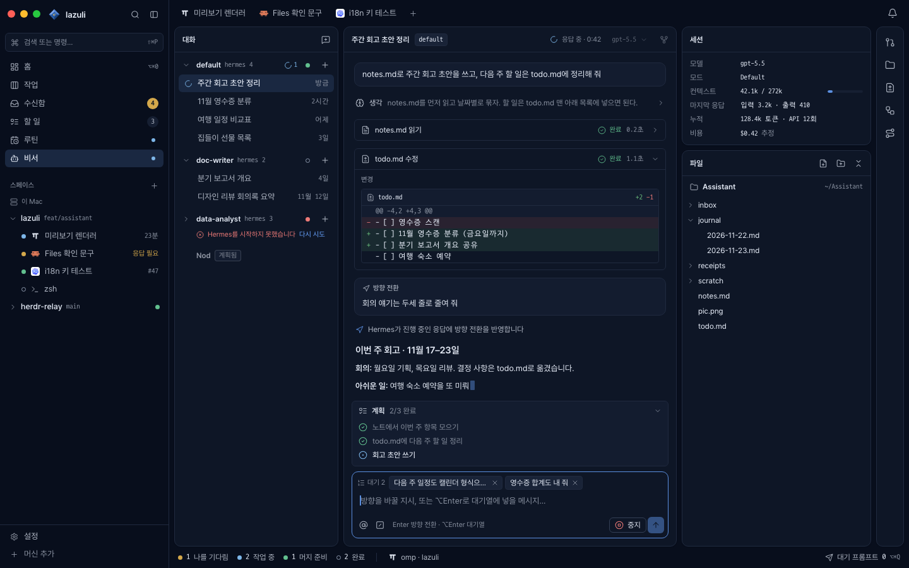

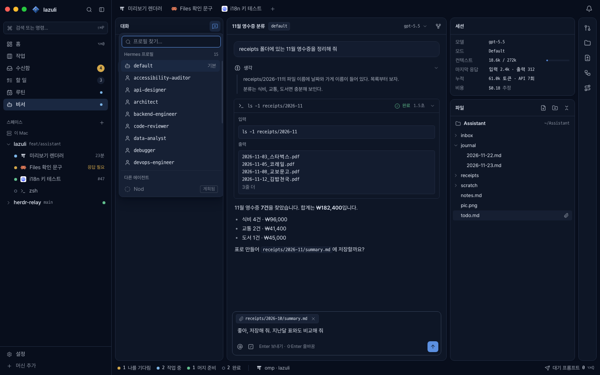

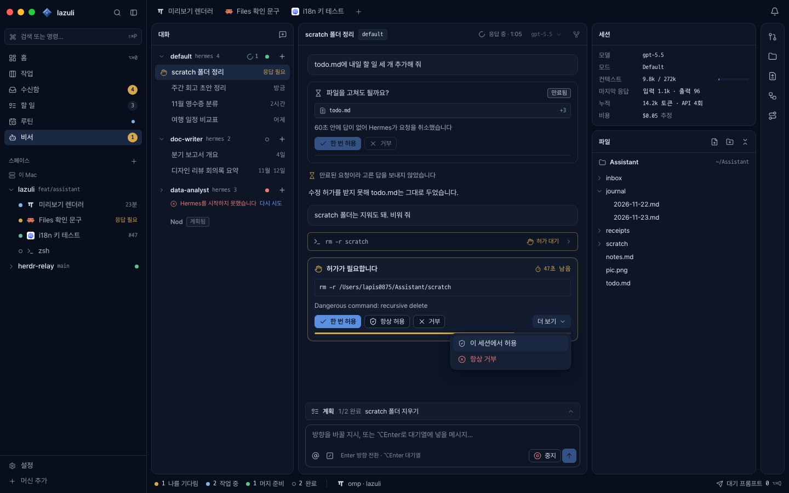

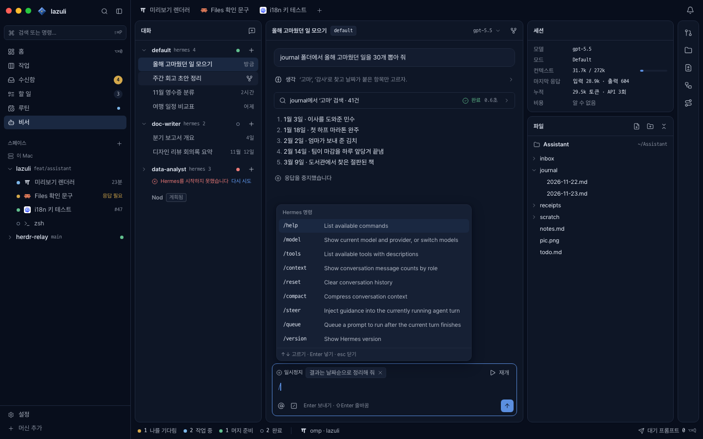

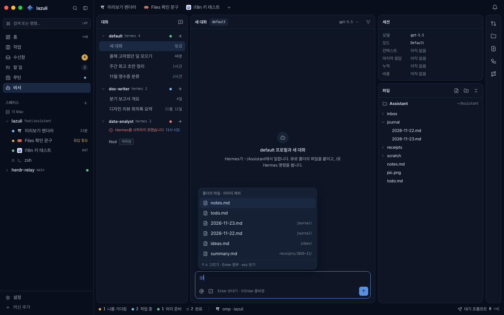

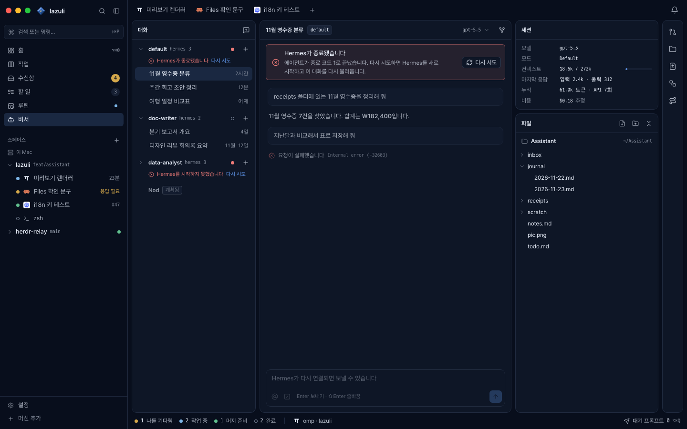

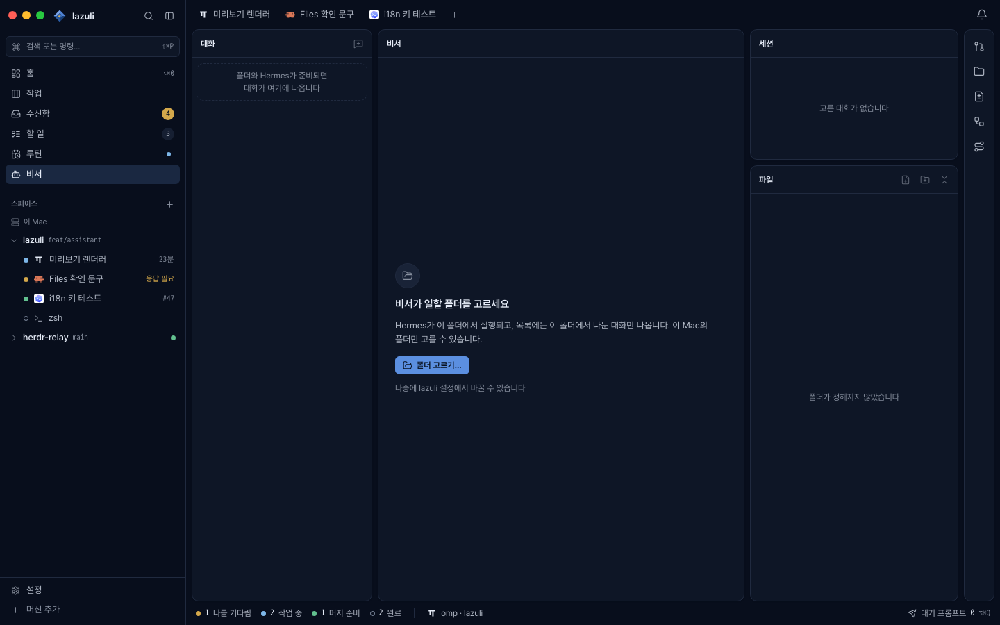

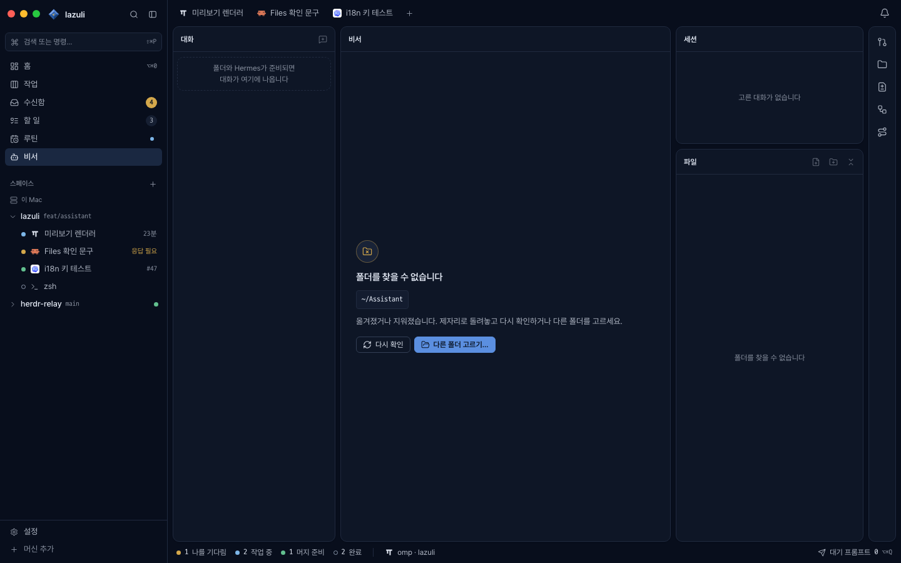

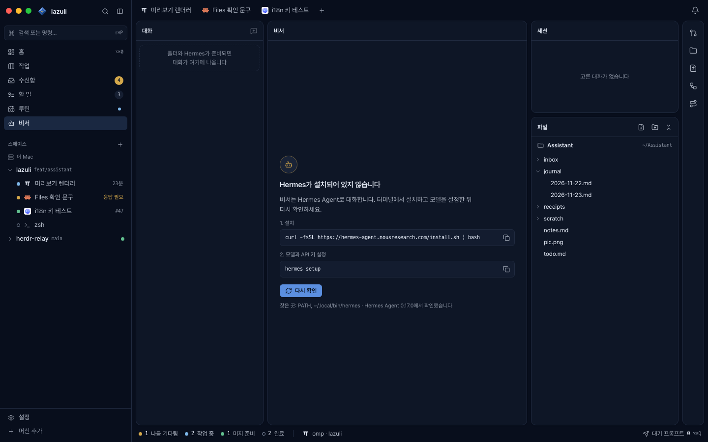

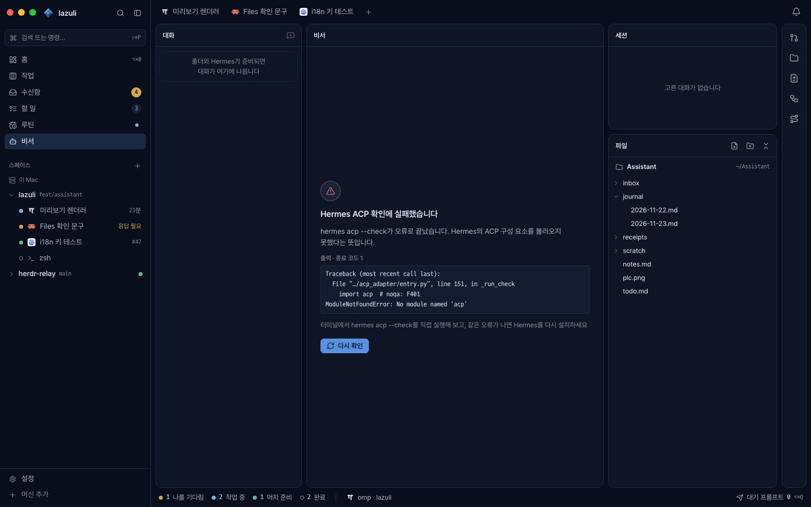
hermes acp --check output with its exit code, a hint and Check again.HTML
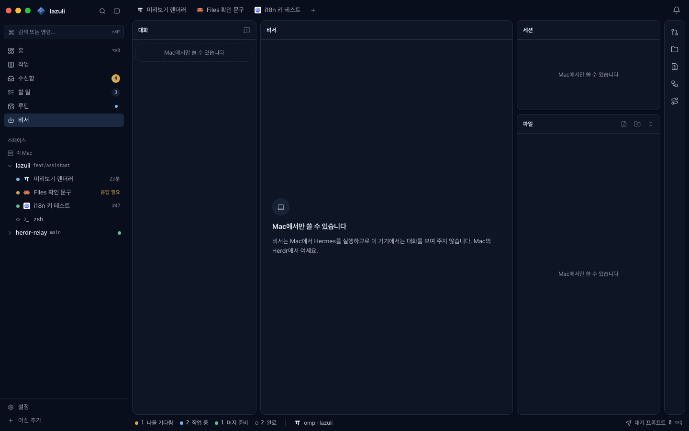
What the node check asks for, and where it is
| Check item (P1) | Screens |
|---|---|
| List: profile groups, running and bridge states, Nod · Planned | 1–6 (ready, off, starting in 5, error in 1–6, running in 1–3, waiting in 3, collapsed group everywhere) |
| Streaming text | 1 |
| Tool cards collapsed and expanded, with a diff | 1 (collapsed read, expanded edit with diff), 2 (expanded execute), 3 (awaiting permission), 4 (collapsed search) |
| A thought | 1 and 4 (collapsed), 2 (expanded) |
| A plan | 1 (dock open), 3 (dock collapsed) |
| Approval card with More and countdown; an expired card | 3 |
| Steer notice; queued chips, one paused | 1 (steer and two chips), 4 (paused chip with Resume) |
| Composer with @ and / menus and Stop | 5 (@), 4 (/), 1 and 3 (Stop) |
| Side column: info above files | every screen |
| Gates: no folder, folder missing, Hermes missing, check failed, relay | 7–11 |
| New-chat profile picker with Nod Planned | 2 |
| Light and dark, Korean and English | every screen, four PNGs each (toggles above) |
Not drawn, same parts with other text: the “Checking Hermes…” gate (spinner and one line), the disconnected banner (the agent-exit banner's shape), bridge stopped (the off ring, its own tooltip), an answered approval (collapses to one line, check icon and “Answered: Allow once”), a replayed tool card (no duration, no diff), the dropped-items notice, the model menu (an openMenu list with a check on the current model), the folder-change confirmation in settings (strings in other), and the loading line.
Icons
New Lucide icons this screen needs (lucide-static 1.75.0, ISC, redrawn at stroke 1.75 like the kit's set; sources in icons-new/, for U2 to copy into mods/lazuli/ui/icons/):
at-signcomposer @ button
square-slashcomposer / button
brainthought, tool kind think
paperclipattachments, Attach in the tree
navigationsteer tag and notice
folder-openchoose folder
folder-xfolder missing
laptoprelay gate
Reused from the kit: bot (sidebar item, default profile, empty chat, Hermes gate), message-square-plus, plus, hand, timer, hourglass, shield-check, check, x, list-todo, circle-check, circle-dot, circle, circle-dashed, list-ordered, circle-pause, play, circle-stop, arrow-up, git-fork, loader, circle-x, triangle-alert, refresh-cw, copy, user, search, chevron-*, and per tool kind file-text (read), file-diff (edit), trash-2 (delete), move-horizontal (move), search (search), terminal (execute), globe (fetch), layers (switch_mode), wrench (other). route was not used for steer: the rail's Plan panel already owns it.
Text
- catalog.ko.js and catalog.en.js are in lazuli's catalog format (flat keys,
{var}placeholders, Korean in the-습니다voice of the other catalogs). The default export isassistant.*for U1;otherholds the keys for the shell, palette and settings catalogs.build.pyfails when the two languages differ or a screen uses a missing key or icon. - Approval buttons are labelled by
optionIdfrom the catalog; an option id lazuli does not know shows Hermes's ownname. Hermes's words stay as Hermes sends them in both languages: command descriptions in the / menu, the approval detail (“Dangerous command: recursive delete”), mode names (“Default”).
Notes for the views (U1, U2)
- CSS variables are the kit's names (
--bg-card=tokens().bg.card,--state-blocked,--radius-lg,--font-size-sm, …) andstyle.cssuses only flex rows and columns, text, icons, 1 px borders, radii, solid fills, the two kit shadows and opacity. No grid, gradient, blur, transform or pseudo-element on the screen. - Block headers match the Files panel: 40 px, title 12 px semibold, 12 px left padding, a soft bottom rule. Group headers are 28 px rows: twisty, profile (12 px semibold),
hermesand the chat count (11 px mono, tertiary), running count (spinner + number, working), bridgeStatusDot(ready = done, starting = working breathing, off/stopped = idle ring, error = error) with its tooltip and screen-reader label, thenIconButton“+”. A bridge error adds a line with the reason and Retry, also when collapsed. - Transcript: the user message is a surface box (radius lg); Hermes's text has no bubble and goes through lazuli's Markdown renderer (B6); a thought is a 28 px row that expands to left-ruled text; a tool card is a bordered radius-md box with a 32 px header (kind icon, title, status, duration in mono, chevron) that expands to Input, Output (capped, “N more lines”) and Changes (the diff); events are one line, icon and text. A transcript that fits starts at the top; one that overflows stays at its end while the stream runs.
- The plan is
ChatState.plan, not an item, so it is a dock between the transcript and the composer: one row collapsed (Plan, n of m, the entry in progress), the entries when open (circle-check success, circle-dot working, circle tertiary). - Approval card: radius lg, surface fill, pyrite edge at 45%; header hand, title, countdown in mono pyrite; body the command (mono box) or the diff header, then Hermes's detail; buttons
allow_once(primary),allow_always,denywhen present; every other option in More; a 3 px bar drains with the seconds left. Expired: card fill, soft edge, hourglass, “Expired” badge, buttons disabled. - Composer: radius lg, strong edge (accent when focused); rows: queue (label or “Paused” + Resume, removable chips), attachments (paperclip chips), the text, a 36 px toolbar (@, /, the key hint, then Stop and the steer button while running, else Send). The @ and / lists are popovers inside the chat block because they follow the typing; the profile picker, More and the model menu are
openMenuoverlays. - Info: six 20 px rows, label column 72 px; totals and API calls share one row so the block fits K2's 188 px; context has a 56 × 4 px bar; cost shows “estimated” or “unknown”.
- Sidebar item:
bot, tooltip with ⌥⌘4; a pyrite count while approvals wait, else the working dot while a turn runs. - Motion: the kit's spinner, and the kit's breathing opacity on the starting bridge dot, the sidebar dot, the plan entry in progress and the caret. Nothing else moves; with reduced motion all of it stands still (the PNGs are rendered that way).
Deviations and open questions
- Sizes: list 260 and side 300 instead of 280 and 340 (reason above). Not tabs.
- Expired approval: its buttons are disabled. AT-08's “wait 61 s, then press Deny” can then reach the “too late” refusal only through
lazuli.assistant:deny(K7) or a press racing the last tick. - Catalog keys: the sidebar reads
shell.app.<place>for its labels and the palette usespalette.cmd.go.<place>; K1 namesshell.nav.assistantandpalette.go.assistant. The catalog here hasshell.app.assistant(label),shell.nav.assistant(the badge's screen-reader text, likeshell.nav.inboxCount) andpalette.cmd.go.assistant. - /steer and /queue show in the / menu because Hermes advertises them (AT-11); Enter and ⌥Enter already do both. Hiding them is open.
- Gallery:
docs/mockups/index.html(outside P1's files) does not link this folder yet.